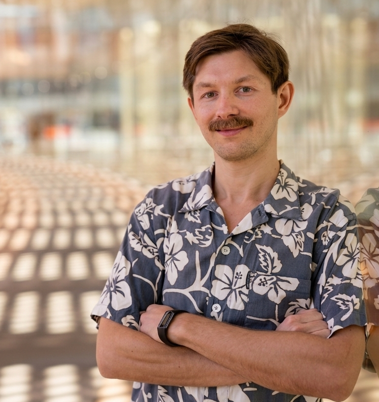

I am a Postdoctoral Research Associate in the Computational Cognitive Science Lab at Princeton University. I help coordinate a large interdisciplinary team working on a Templeton World Charity Foundation initiative to understand how diverse constraints give rise to the diversity of animal minds. I was awarded my PhD by the Australian National University, where I was the Gwendolyn Woodroofe Scholar.
Animals show a remarkable ability to cope with complex and changing environments. My research aims to understand how evolution shapes cognition. We generally cannot observe evolution unfolding, and cognition does not fossilise. I use mathematical models to rigorously study how evolution designs minds to use information in adaptive ways. My recent work integrates formalisms from artificial intelligence with evolutionary theory to explain empirical patterns in animal learning.